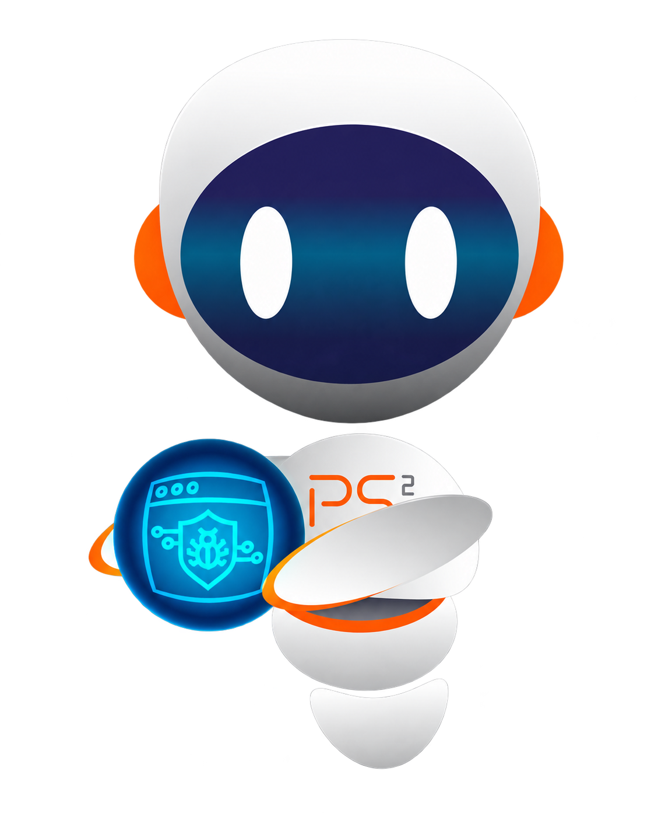

Parceiros e tecnologias que utilizamos
DELLDell
Technologies
Technologies
•••••
••••CISCO
••••CISCO
vmware
UUBIQUITI
Microsoft
FORTINET
AMicrosoft Azure
⌣AWS
⬡MikroTik
WeThinkSolutions
Microsoft 365
veeamPROPARTNER
registered
registered
KASPERSKY◈
SONICWALL
3CX®
INFRAESTRUTURA ✳ CLOUD ✳ CIBERSEGURANÇA ✳ SUPORTE INFRAESTRUTURA ✳ CLOUD ✳ CIBERSEGURANÇA ✳ SUPORTE INFRAESTRUTURA ✳ CLOUD ✳ CIBERSEGURANÇA ✳ SUPORTE INFRAESTRUTURA ✳ CLOUD ✳ CIBERSEGURANÇA ✳ SUPORTE INFRAESTRUTURA ✳ CLOUD ✳ CIBERSEGURANÇA ✳ SUPORTE INFRAESTRUTURA ✳ CLOUD ✳ CIBERSEGURANÇA ✳ SUPORTE INFRAESTRUTURA ✳ CLOUD ✳ CIBERSEGURANÇA ✳ SUPORTE INFRAESTRUTURA ✳ CLOUD ✳ CIBERSEGURANÇA ✳ SUPORTE
O que fazemos
Tecnologia que mantém
seu negócio em movimento.
Serviços de TI pensados para atender sua operação com clareza, segurança e continuidade.
+

PS² / EST. FOR THE NEXTMais que tecnologia
A gente cuida
da base para
você avançar.
Somos parceiros de tecnologia. Entendemos sua operação, desenhamos a solução e seguimos junto depois da entrega.
Um pouco sobre nós ↗EM DESTAQUE
Shadow IT: soluções com IA criadas fora da TI formal.
Metade dos participantes de uma pesquisa já criou automações, aplicativos ou integrações sem depender de um projeto formal de TI. Entenda os desafios de segurança e governança.
 IA E SEGURANÇA
IA E SEGURANÇA